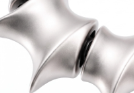
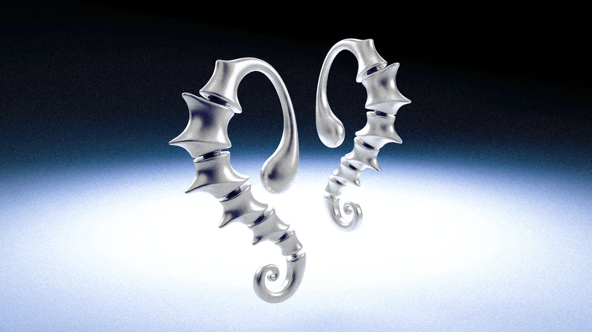
Office wearable accessory for sensory reset.
A wearable grounding device designed to bring you back to the present.
Ground yourself through sensation
CTRL KEY EAR CUFF SYNGNA
오피스 트라우마 순간을 위한 웨어러블 액세서리
CTRL KEY는 직장 내 예상치 못한 호출, 피드백, 긴장의 순간에 사용자의 상태를 전환하는 이어커프형 웨어러블 액세서리입니다. 감각 기반 그라운딩 기술을 통해 생각이 아닌 몸의 감각으로 현재의 안정감을 되찾도록 설계되었습니다.
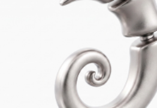
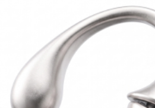
01
Design Language
Inspired by Seahorse Tail Structure
해마의 꼬리는 단순한 곡선이 아닌,
외부 환경 속에서 스스로를 지지하고 균형을 유지하는 구조다.
CTRL KEY는 그 형태를 재해석하여 귀를 감싸고
안정적으로 고정되는 구조로 발전시킨다
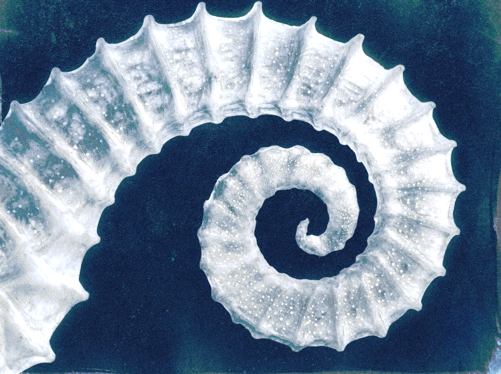
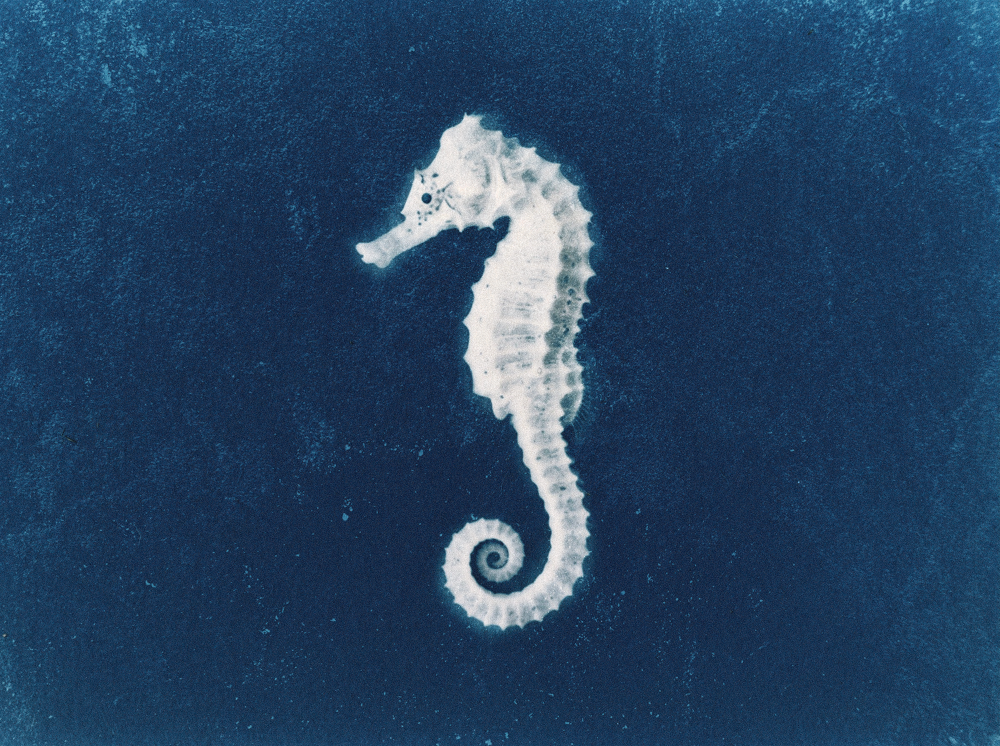
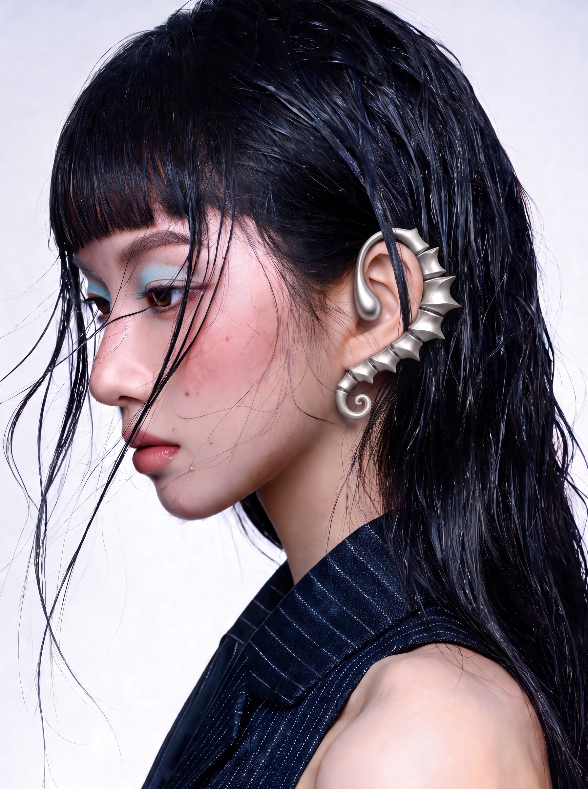
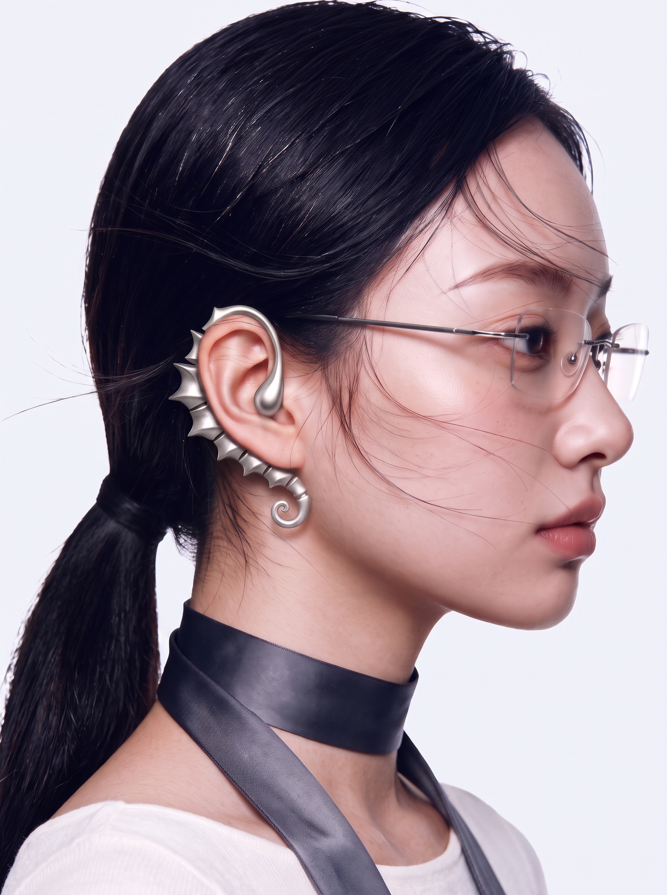
02
Structural Design
귀의 곡선을 따라 자연스럽게 감싸는 구조는 별도의 고정 장치 없이 안정적인 착용감을 제공합니다.
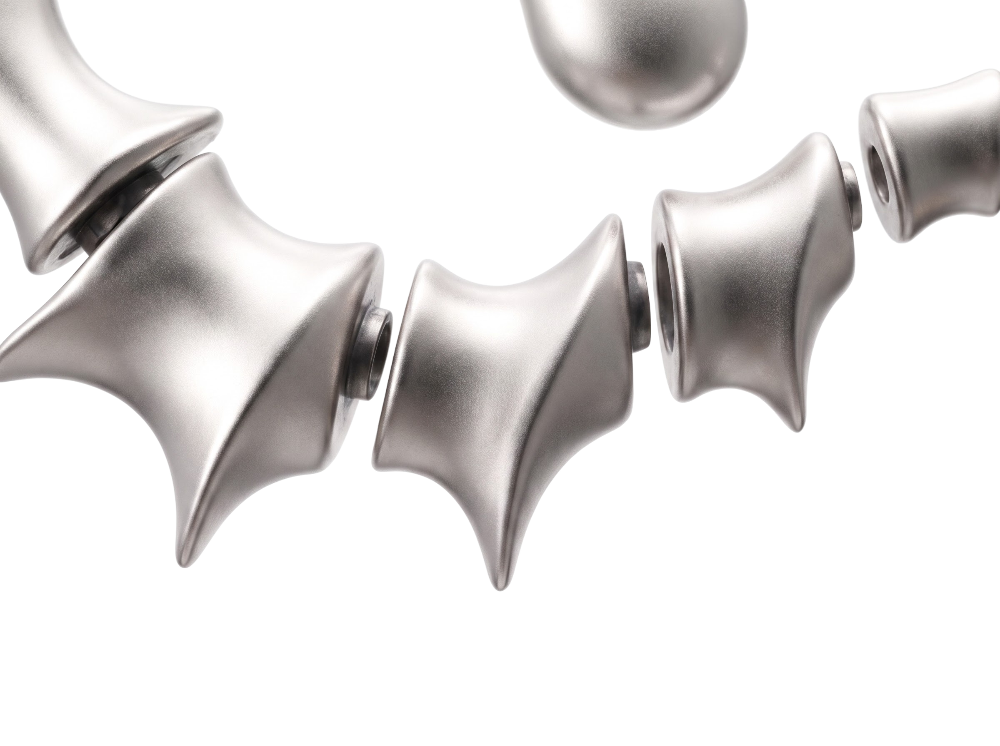
03
Sensory Grounding System
CTRL KEY는 화면이나 알림이 아닌 신체 감각을 통해 사용자의 상태 변화에 접근합니다. 압력, 온도, 진동, 호흡 리듬을 활용하여 직장내 트라우마의 순간을 현재의 감각으로 전환합니다
감각을 나누어 담은 모듈 구조 분절된 각 모듈은 온도, 압력, 진동, 저주파 등 서로 다른 감각 기능을 담당한다. 귀를 따라 연결된 모듈이 감각 자극을 단계적으로 전달해, 긴장된 순간 사용자가 자신의 신체 감각에 다시 집중하도록 돕는다
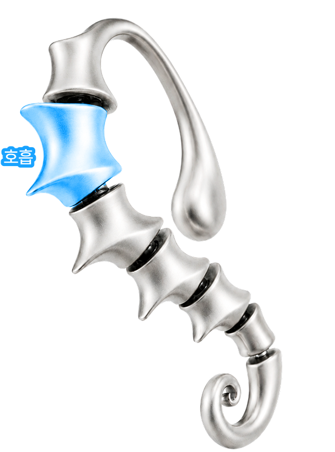
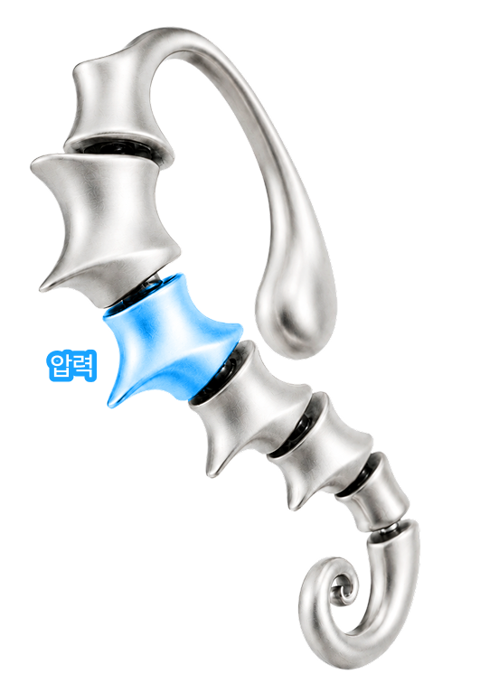
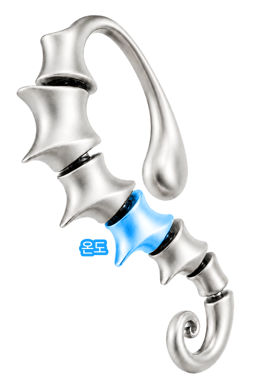
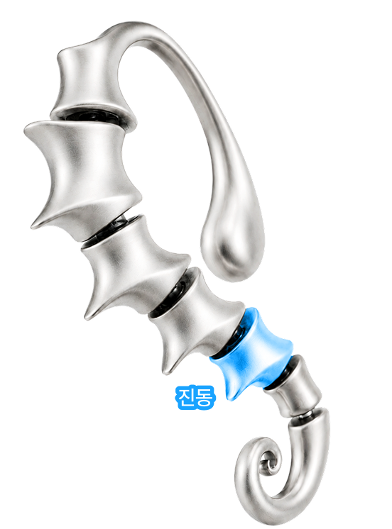
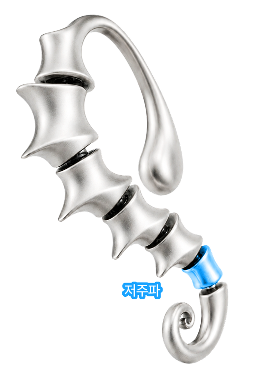
04 Product Anatomy
작은 이어커프 안에는 감각 경험을 만드는 여러 레이어가 결합되어 있습니다. 외부 쉘, 피부 접촉층, 센서 모듈, 감각 출력 구조가 하나의 조형 안에서 작동하도록 설계되었습니다
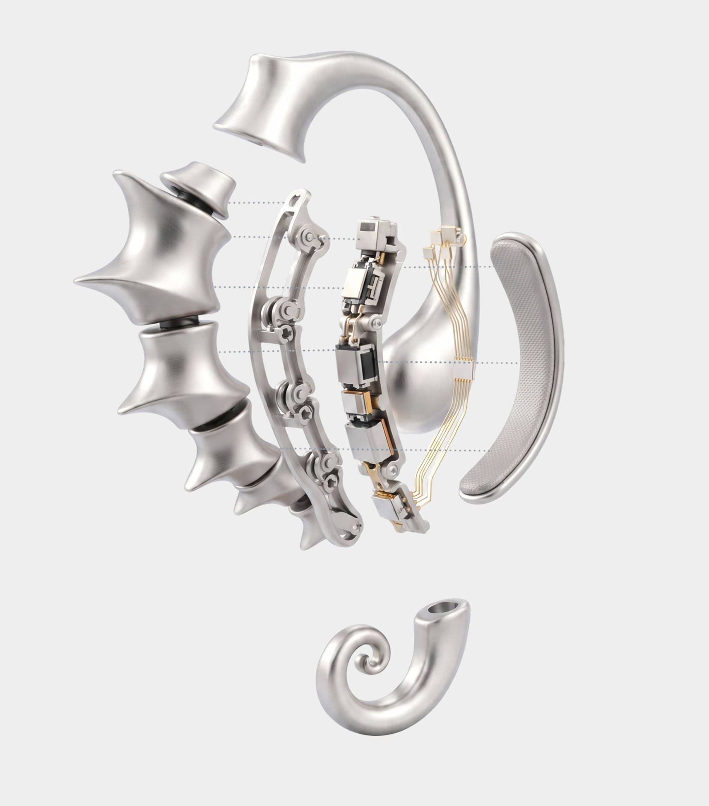
05
Material Design
CTRL KEY는 의료기기가 아닌 매일 착용하는 액세서리 경험을 지향합니다. 소프트 매트 스테인리스의 은은한 광택과 정제된 곡면을 통해 기술 장치의 인상을 줄이고, 주얼리처럼 자연스럽게 일상에 스며들도록 디자인했습니다.
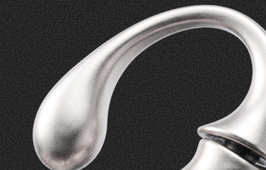
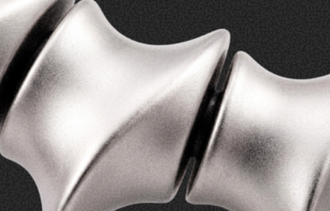
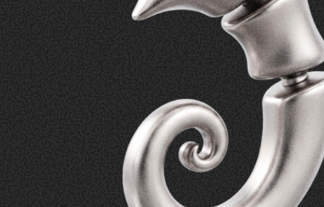
Explore the visual
campaign of CTRL KEY
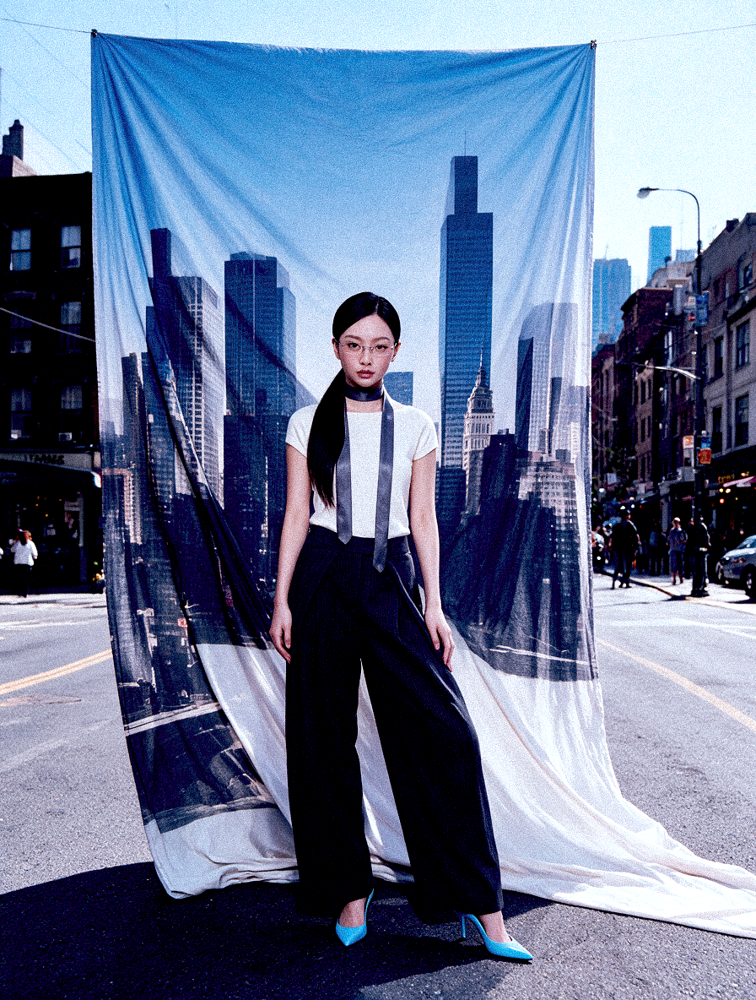
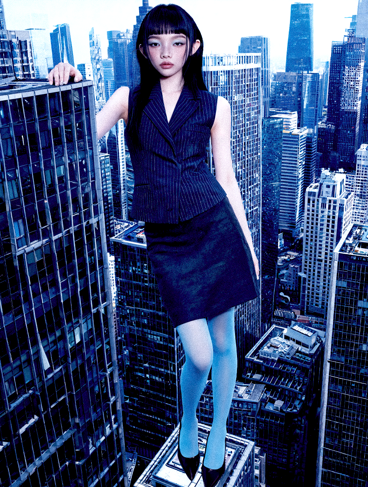
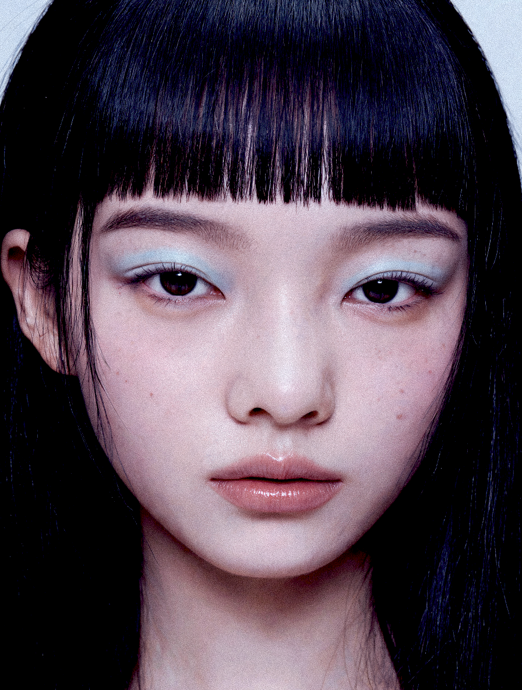